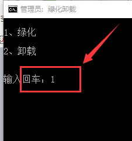

教程——解决百度网盘限速问题
编辑者：祁亚娟
本教程默认已会安装浏览器拓展程序
诸多方法已经失效，此方法幸存至最新版已不易！！！
****【说明】****
主要方法：浏览器插件+脚本【用其他破解下载工具代替百度网盘客户端】
优点：不限速、可在线下载百度网盘分享或其他文件和文件夹
更新时间：2017年4月22日【不保证长期有用】
强调：下载速度再提高和网速还是有很大关系的！！！
****【必须准备】****
（1）谷歌浏览器（只因本人使用的是谷歌）
1、Chrome和360等浏览器需要安装拓展Tampermonkey
下载地址：http://tampermonkey.net/
2、Firefox 浏览器需要安装拓展 Greasemonkey (文末会附上已经集成好脚本的Firefox浏览器下载地址)
下载地址：自行搜索下载
（2）脚本：百度网盘直接下载助手
网盘链接: https://pan.baidu.com/s/1jI7LO4e 密码: m8qe
（3）下载工具：（无需单独打开，可在线直接调用）
IDM绿色版下载：（解压后的文件夹有.Crx浏览器拓展文件需自己安装）
网盘链接: https://pan.baidu.com/s/1kUS2tZh 密码: r5td
迅雷极速版下载：http://www.pc6.com/softview/softview_108931.html
*******本人使用的是IDM，这边需要绿化一下********
① 打开解压后的IDM文件夹 以管理员身份运行“！绿化卸载.Bat”
② 在界面中输入1 并回车

③ 出现如下界面则绿化完成，按提示操作
****【教程】****
一、浏览器集成脚本教程（即工具准备）
1、此处默认已会安装Tampermonkey谷歌拓展程序
2、打开浏览器，拓展安装好之后，谷歌地址栏右侧会出现如图所示图标，点击图标

3、点击 添加新脚本 将原有的程序清空
4、将下载好的百度网盘脚本程序用记事本打开，Ctrl+A（全选），Ctrl+C（复制）；Ctrl+V（粘贴）至Tampermonkey脚本编辑器，保存即可
二、使用教程（此处以本人云盘里文件为例）
1、打开百度网盘网页，选择需要下载的文件，以上步骤完成好，界面会出现下载助手
图上选择是我常用方式，其他的可自行尝试
2、网页会自动跳出IDM下载界面
3、个人觉得速度还可以
提醒：下载完成会自动跳出界面
保持网络环境稳定效果更佳
****【可能遇到的问题】****
1、 如果下载速度被限制在100KB左右，说明你的帐号被百度网盘拉黑了，需要退出登录才能恢复正常下载。使用IDM下载时暂无任何问题，使用迅雷下载时，可能需要下载完成后才会显示文件后缀名。
2、如果下载的文件是文件夹时，单独下载一个文件可能无法加速下载，解决方法是选中两个以上的文件同时下载即可达到满速了。
附：
已经集成好脚本的Firefox浏览器：
百度网盘链接: https://pan.baidu.com/s/1eSGb1dg 密码: xkyn
PS：教程方法来源于网络